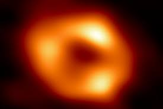
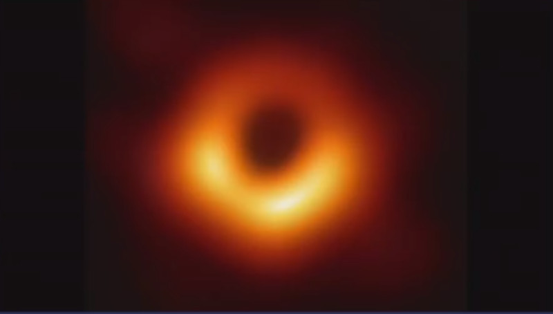

O que são buracos negros?

Um buraco negro é uma região no espaço onde a gravidade é tão forte que nada pode escapar. Eles são formados após uma supernova (explosão de uma estrela) com tamanho de pelo menos 3 vezes a massa do Sol. A gravidade é muito forte porque a matéria foi espremida em um espaço minúsculo.
Primeira imagem do buraco negro no centro da nossa galáxia

Astrônomos revelaram a primeira imagem do buraco negro supermassivo, Sagitário A* (Sgr A*), que fica no centro da Via Láctea. Sgr A* é quatro milhões de vezes mais massivo que o Sol e está a 27 mil anos-luz de distância.
“Ficamos surpresos com o quão bem o tamanho do anel estava de acordo com as previsões da Teoria da Relatividade Geral de Einstein”, conta Geoffrey Bower, cientista do projeto EHT Geoffrey Bower da Academia Sinica, em Taiwan.
A imagem foi feita por uma rede mundial de radiotelescópios, realizada pela equipe Event Horizon Telescope (EHT) — a mesma que obteve o primeiro registro de um buraco negro, o M87*.
Primeira imagem de um buraco negro
O primeiro buraco negro já registrado está no centro da galáxia Messier 87 (M87), fica a 55 milhões de anos-luz da Terra. Ele é 6.5 bilhões de vezes mais massivo que o Sol. Quanto maior a massa, mais forte é o campo gravitacional de um buraco negro. A imagem foi feita por uma rede mundial de radiotelescópios, realizada pela equipe Event Horizon Telescope (EHT).